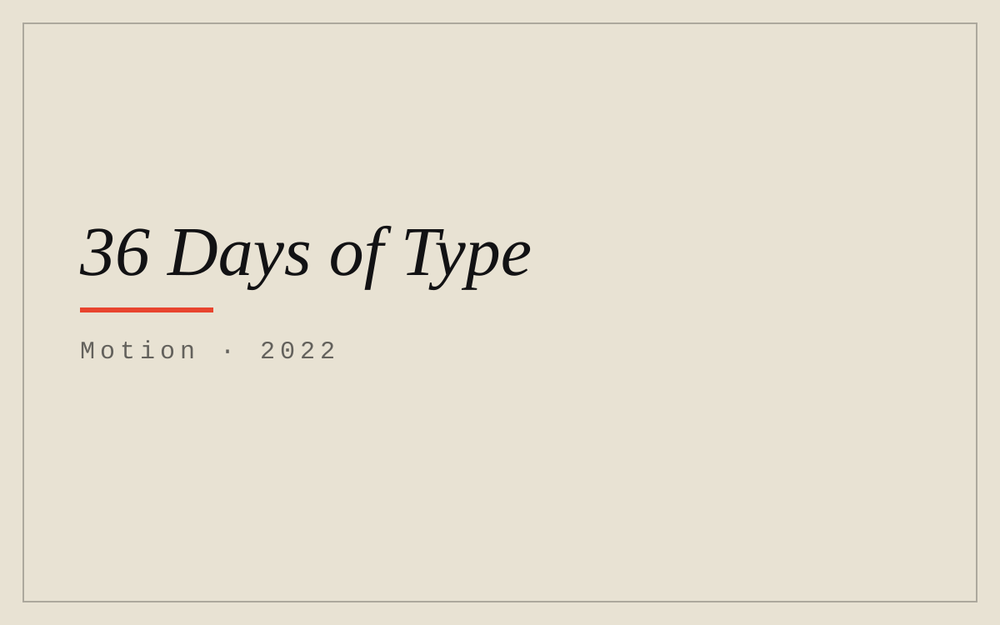
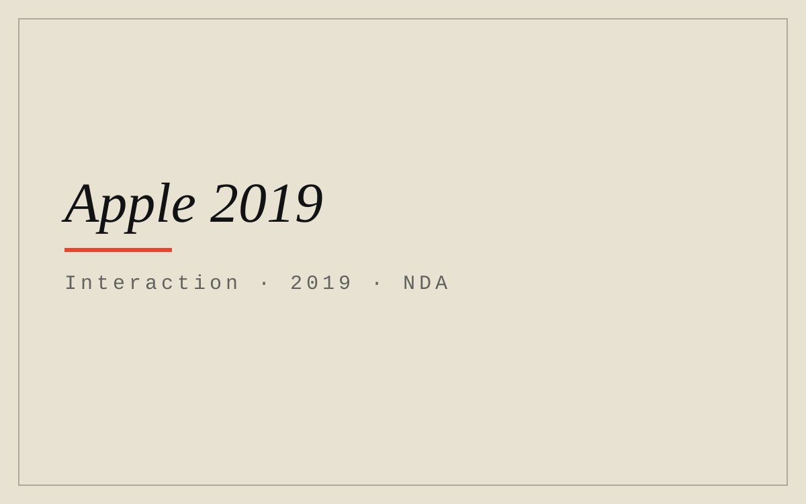
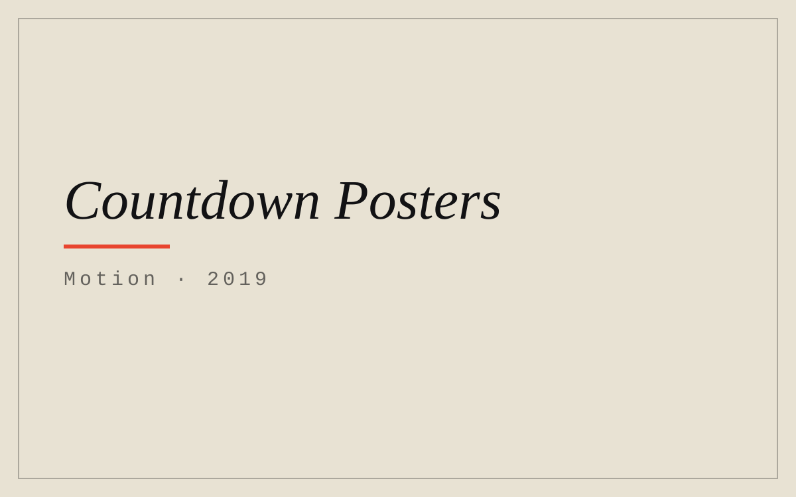
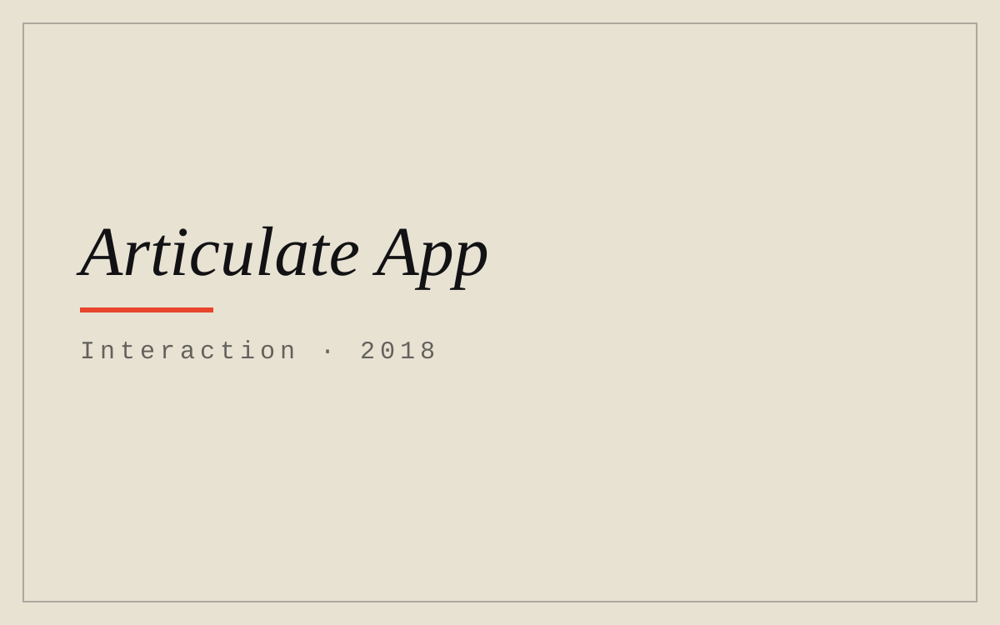
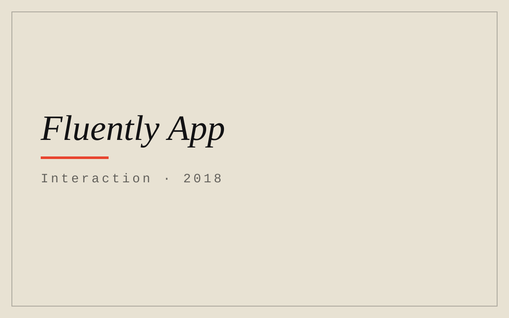
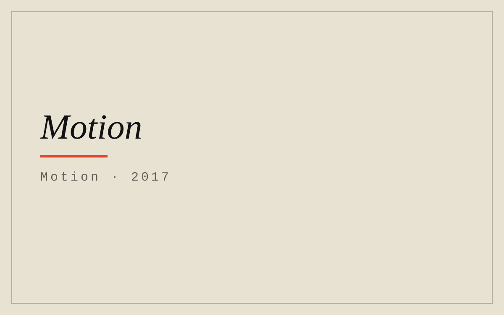

Designer, creative coder, & thinker.














Designer & creative coder
New York · open to great briefs
22 projects, 2016–22Read the piece →
the desk/shivam sinha/new york · --:-- est
Every project I’ve shipped, in one place.
Twenty-two projects across branding, print, motion, interaction and one thesis — from Apple to Parsons, 2016 to 2022.
0a / Selected work
Six briefs. One click each.
-
01
Serif — “A logo that transforms.”
The identity for the LGBTQIA+ community — logo, auras, and the dot-of-i device.

-
02
Data Aeternum — “Your data, made tangible.”
The BFA thesis: a data-privacy guide — website, interactive handbook, NFC.

-
03
Apple 2019 — “The NDA still holds.”
A 14+ page presentation for the macOS Catalina launch, at Apple.

-
04
36 Days of Type — “36 days. 3D. Letterforms.”
One type design a day, for 36 days — each built in 3D.

-
05
Super8 — “Work anywhere. Live everywhere.”
A full rebrand for a community of digital nomads.

-
06
Here is New York — “100 inches wide.”
E.B. White’s 1949 love letter, re-typeset as a foldout map of Manhattan.

0b / The path
The path, so far.
-
Currently · Work&Co
designer · digital products
Designing great digital products.
-
Previously · Pentagram
Team Oberman · Team Hayman
Brand work with Oberman and Hayman.
-
BFA · Parsons
Communication Design · double honors
New York, Parsons.
-
Intern · Apple
Interactive Visual Design
macOS Catalina, 2019.
-
Also · New York
Gretel · The New School · NYU
In various design capacities.
01 / About
Hi. I’m Shivam. Designer, creative coder, & thinker.
I’m a designer and creative coder with a passion for design and technology. I’m currently a Designer at Work&Co, where I work on great digital products.
Previously I was at Pentagram, with Team Oberman and Team Hayman. I hold a BFA in Communication Design from Parsons School of Design, New York — with double honors. Before all of it: Gretel, Apple, The New School, and NYU.
I am most interested in the intersection of design and technology. I create brands, websites, and interactive experiences to surprise, delight, and inspire — to humanize technology.
Index card · pinned above the desk
Designer — creative coder — thinker.
Work&Co → Pentagram → Parsons.
Design × technology
— S.S.
02 / BRANDING
Identity, end to end.
Identity, from logo to system — a platform that carries every identity in a community, a nomad collective that works from anywhere, a gift card that stretches across time zones, and the 2016 logos that trained the hand.
-
2021
A logo that transforms — the infinite identities of the community
the piece → -
2019
A rebrand for digital nomads — work anywhere
the piece → -
2018
A gift card across distance — the stretching loop
the piece → -
2016
A decade of logos, from 12by12 to The Wok
the piece →
03 / PRINT
Paper, set right.
Books, posters, and specimens — E.B. White’s New York on a 100-inch fold, a type specimen for a new grotesque, and redesigns that argue for the right voice.
-
2017
E.B. White's love letter, re-typeset on a 100-inch foldout map
the piece → -
2017
Rand, Tschichold, Ruder — typeset across the spread
the piece → -
2019
Three questions about our data — and 40 GB of evidence
the piece → -
2019
Save-the-date cards, to 100,000+ people
the piece → -
2019
A type specimen book for Christian Schwartz's FF Bau
the piece → -
2017
Emigre's interview with Experimental Jetset, as a book
the piece → -
2017
Edwin Abbott's satire, redesigned as a reading experience
the piece → -
2019
Seven posters — from Art Deco NYC to Coachella
the piece →
04 / MOTION
Everything, in motion.
After Effects and hand-coded experiments: a 36-day study in letterforms, an explainer for the next internet, and the work in between.
-
2022
36 days of learning 3D — that became a study in letterforms
the piece → -
2019
An explainer on Web 1.0 → 2.0 → 3.0
the piece → -
2019
An animated self-portrait of relocation and adaptation
the piece → -
2019
A countdown to The New School's Fall Block Party
the piece → -
2017
A reel of motion graphics — After Effects and hand-coded
the piece →
05 / INTERACTION
Interfaces, and the code behind them.
Apps, interfaces, and the code behind them — including the one under NDA: a 14-page presentation for the launch of macOS Catalina.
-
2019
14+ pages for the macOS Catalina launch — under NDA
the piece → -
2018
An AI app that turns rambling into a response
the piece → -
2018
Learn words while reading — then explain them back
the piece → -
2018
Three coded sites — hex posters, NASA, the archive desk
the piece →
06 / THESIS
Your data, made tangible.
Data Aeternum — the BFA thesis: a data-privacy guide for consumers, delivered as a website, an interactive handbook, and an NFC version of the print.
-
2020
A data-privacy guide — website, interactive handbook, NFC
the piece →